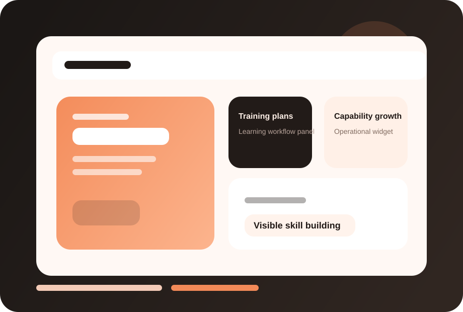
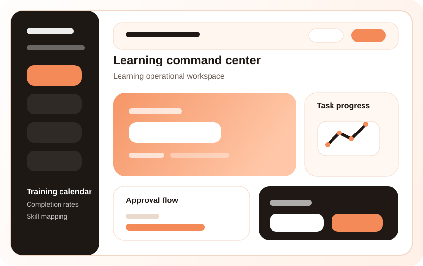

Faster execution
Shorten turnaround time with clearer workflows, cleaner ownership and fewer manual follow-ups around Learning & Development.
FuzionHR helps businesses plan training, track participation, maintain learning records and align development with role and performance needs.

FuzionHR Learning & Development helps teams move from manual coordination to a disciplined operating flow with stronger accountability, easier tracking and better decision support.
Create a dependable operating layer instead of disconnected follow-ups.
Maintain cleaner records, approvals and supporting documentation.
Give HR and leadership better visibility into what needs attention.
Shorten turnaround time with clearer workflows, cleaner ownership and fewer manual follow-ups around Learning & Development.
Give HR, managers and leadership a clearer view of pending actions, approvals and business risk related to Learning & Development.
Standardize the process before your organization becomes harder to manage across teams, branches and reporting layers.
These tailored mockup screens create a much stronger product story today and can later be replaced one-for-one with actual FuzionHR screenshots.

Showcase the core day-to-day view that HR teams, managers or employees use most often.
Use this section for dashboards, reporting snapshots, approvals or audit-ready summaries.